Plus de 1 500 km à vélo, à travers la France et le Royaume-Uni, pour soutenir les enfants malades et leurs familles.
Le parcours présenté est prévisionnel. Les étapes et les distances pourront évoluer en fonction des conditions de circulation, de la logistique et des partenaires qui rejoindront l’aventure.
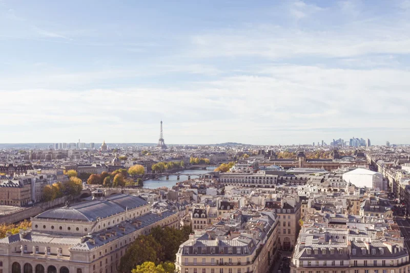
Photo de Dimitri Iakymuk sur Unsplash
Le défi commence au cœur de Paris. Cette première journée nous conduira jusqu’à Rouen en suivant la vallée de la Seine, avec plus de 1 500 kilomètres encore devant nous.
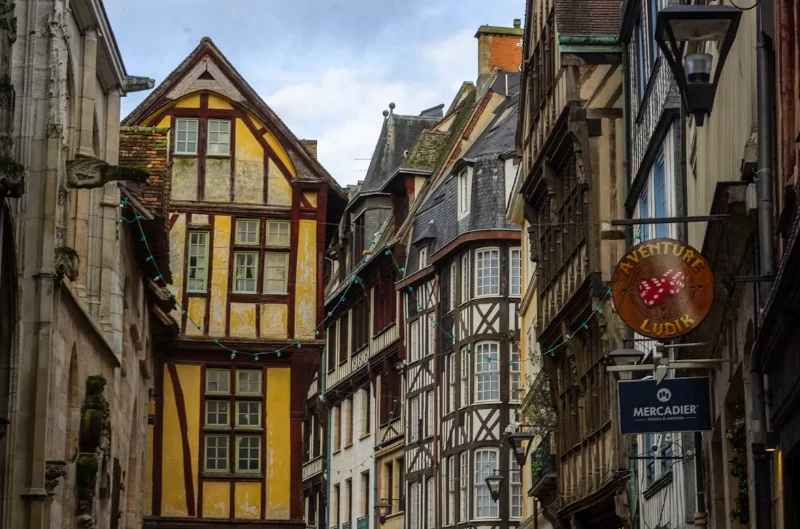
Photo de Barry Talley sur Unsplash
Direction la côte normande et Le Havre, dernière étape française avant la traversée de la Manche.
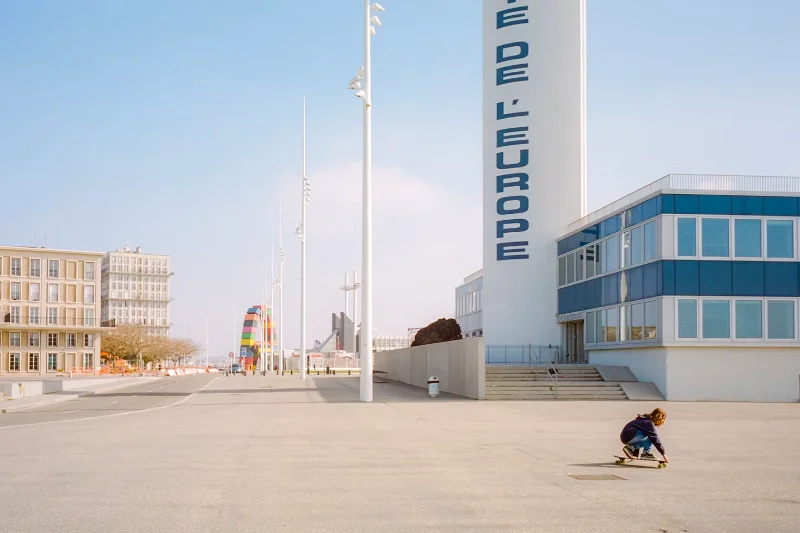
Photo de Paul-François Gapais sur Unsplash
Après la traversée jusqu’à Portsmouth, nous reprendrons la route pour rejoindre Southampton. Une journée plus courte sur le vélo, mais essentielle pour assurer la transition entre la France et l’Angleterre.
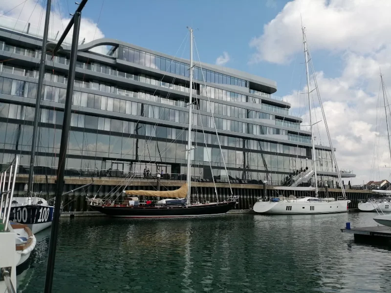
Photo de Hasan Karaman sur Unsplash
Une longue journée vers la capitale britannique, des routes du sud de l’Angleterre jusqu’au cœur de Londres.
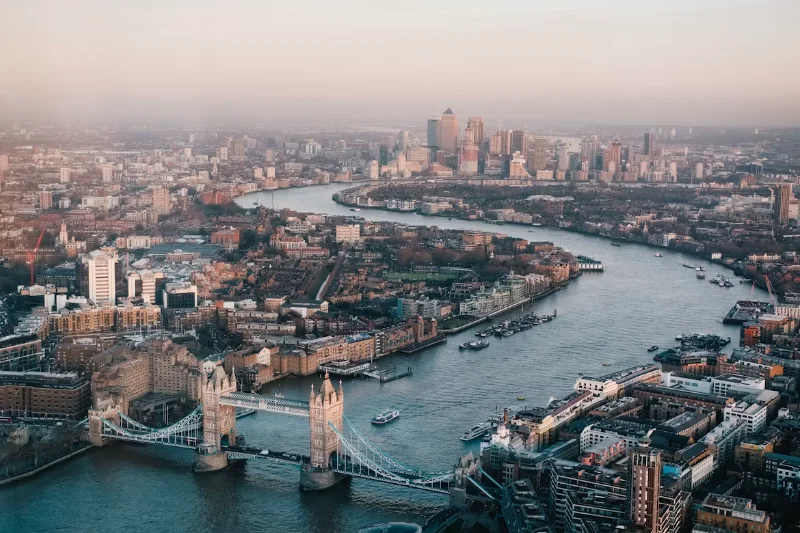
Photo de Benjamin Davies sur Unsplash
Une première journée pour récupérer, entretenir les vélos et aller à la rencontre des partenaires et des soutiens du projet.
Photo de Samuel Dixon sur Unsplash
Nous quitterons Londres pour rejoindre Oxford et lancer notre progression vers l’ouest de l’Angleterre.
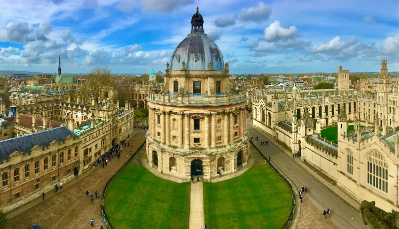
Photo de Ben Seymour sur Unsplash
Une étape vallonnée à travers la campagne anglaise et les Cotswolds, jusqu’à la ville de Bath.
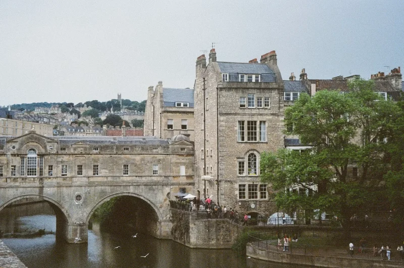
Photo de Elena Jiang sur Unsplash
Cap sur le pays de Galles, avec le passage de l’estuaire de la Severn avant de rejoindre Cardiff.
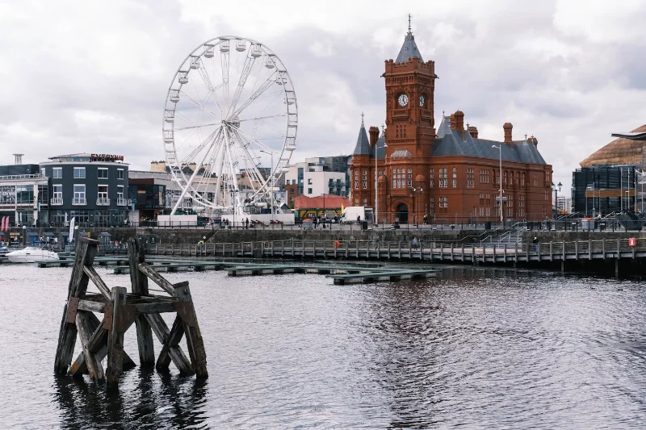
Photo de Taylor Floyd Mews sur Unsplash
L’une des plus longues journées du parcours. Nous quitterons le pays de Galles pour rejoindre Birmingham, au cœur des Midlands.
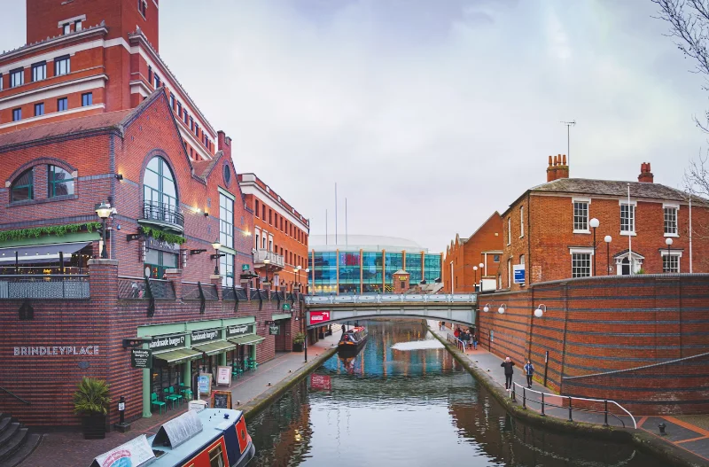
Photo de Gabriel McCallin sur Unsplash
Une deuxième pause pour permettre à l’équipe de récupérer, réviser le matériel et préparer la dernière partie du défi.
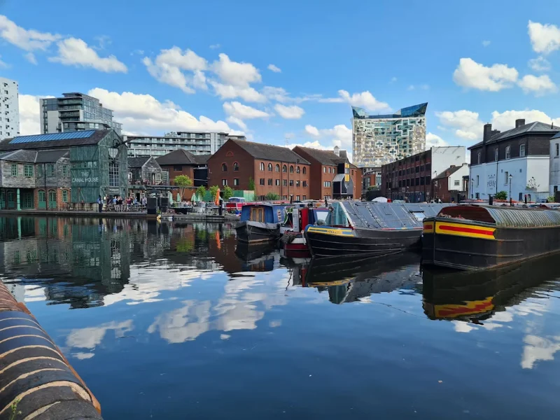
Photo de Lulu Black sur Unsplash
La route reprend vers le nord-ouest de l’Angleterre, jusqu’à Manchester.
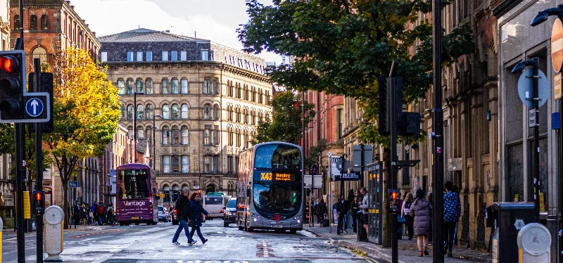
Photo de Mangopear creative sur Unsplash
Une étape exigeante à travers le nord de l’Angleterre, en direction de la ville historique de York.
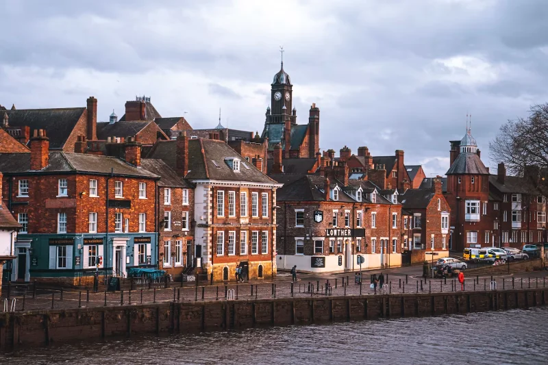
Photo de Jeffrey Zhang sur Unsplash
Nous poursuivrons notre remontée vers le nord jusqu’à Newcastle, dernière grande étape avant la frontière écossaise.
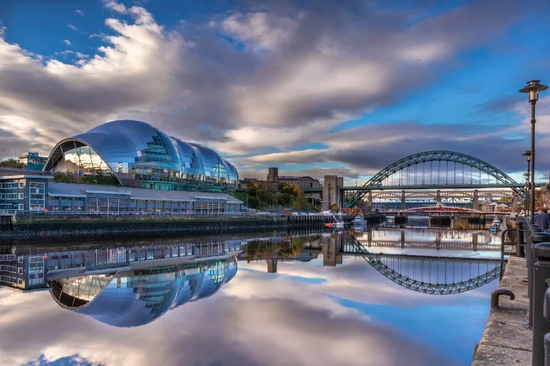
Photo de Karl Moran sur Unsplash
La dernière journée sur le vélo sera aussi la plus longue. Plus de 200 kilomètres le long de la côte est nous sépareront de l’arrivée à Édimbourg.
Après plus de 1 500 kilomètres, chaque participant, partenaire et donateur aura contribué à porter le projet jusqu’à sa destination.
Photo de Adam Wilson sur Unsplash